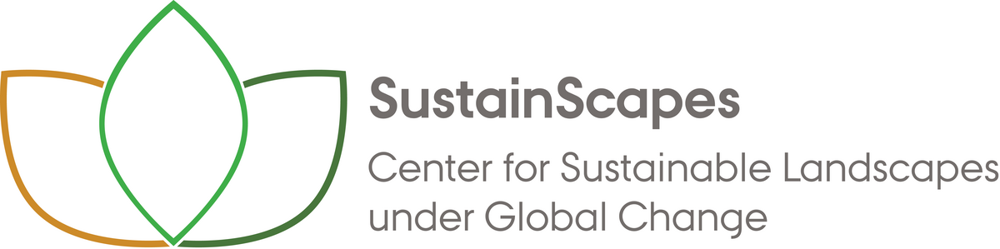

<!DOCTYPE html>
<head>
	<meta name="viewport" content="width=device-width, initial-scale=1">

    <!--- Leaflet CSS stylesheet (needs to be loaded before leaflet js) --->
    <link rel="stylesheet" href="https://unpkg.com/leaflet@1.7.1/dist/leaflet.css" integrity="sha512-xodZBNTC5n17Xt2atTPuE1HxjVMSvLVW9ocqUKLsCC5CXdbqCmblAshOMAS6/keqq/sMZMZ19scR4PsZChSR7A==" crossorigin="" />

    <!--- Leaflet js --->
	<script src="https://unpkg.com/leaflet@1.7.1/dist/leaflet.js" integrity="sha512-XQoYMqMTK8LvdxXYG3nZ448hOEQiglfqkJs1NOQV44cWnUrBc8PkAOcXy20w0vlaXaVUearIOBhiXZ5V3ynxwA==" crossorigin=""></script>

    <!--- Georaster js --->
    <script src="https://unpkg.com/georaster"></script>

    <!--- Georaster-Layer-For-leaflet js --->
	<script src="https://unpkg.com/georaster-layer-for-leaflet/dist/georaster-layer-for-leaflet.min.js"></script>

    <!--- Leaflet AJAX js for easy remote loading of GeoJSON geometries --->
    <script src="js/leaflet.ajax.min.js"></script>

    <!--- Leaflet Mouse Coordinates https://github.com/ardhi/Leaflet.MousePosition --->
    <link rel="stylesheet" href="js/L.Control.MousePosition.css"></link>
    <script src="js/L.Control.MousePosition.js"></script>

    <!---  File specific CSS styles --->
	<style>
        /* Overall map style */
        #map {position: absolute; top: 0; bottom: 0; left: 0; right: 0;}

        /* Leaflet layer control */
        .leaflet-control-layers{
            background: rgba(255, 255, 255, 0.8);
            padding: 6px 8px;
            color: #555;
            border-radius: 0;
        }

        .leaflet-control-layers:before{
            content:"Layer Control";
            color:#777;
            font: normal normal bold 16px Arial, Helvetica, sans-serif;
            padding: 6px 4px;
            line-height: 24px;
        }

        /* Legend specific */
        .legend {
            padding: 6px 8px;
            font: 14px Arial, Helvetica, sans-serif;
            background: white;
            background: rgba(255, 255, 255, 0.8);
            /*box-shadow: 0 0 15px rgba(0, 0, 0, 0.2);*/
            /*border-radius: 5px;*/
            line-height: 24px;
            color: #555;
        }

        .legend h4 {
            text-align: left;
            font-size: 16px;
            margin: 2px 12px 8px;
            color: #777;
        }

        .legend span {
            position: relative;
            margin: 0 0px 0 8px;
            bottom: 3px;
        }

        .legend i {
            width: 18px;
            height: 18px;
            float: left;
            margin: 0 8px 0 14px;
            opacity: 1;
        }

        .legend i.icon {
            background-size: 18px;
            background-color: rgba(255, 255, 255, 1);
        }
	</style>
</head>
<body>
    <!--- Leflet map container --->
	<div id = "map"></div>

    <!--- JS script to build leaflet map --->
	<script>
        // Load base tiles ----

        // OpenStreetMap
        var OpenStreetMap = L.tileLayer('https://{s}.tile.openstreetmap.org/{z}/{x}/{y}.png',
        {
        attribution: '&copy; <a href="https://www.openstreetmap.org/copyright">OpenStreetMap</a> contributors'
        });
        // CartoDB Dark Matter
        var CartoDB_DarkMatter = L.tileLayer('https://{s}.basemaps.cartocdn.com/dark_all/{z}/{x}/{y}{r}.png', {
            attribution: '&copy; <a href="https://www.openstreetmap.org/copyright">OpenStreetMap</a> contributors &copy; <a href="https://carto.com/attributions">CARTO</a>',
                subdomains: 'abcd',
                maxZoom: 20
        });


        // Initiate leaflet ----
        // This needs to be done before loading the Georasters
        var map = L.map('map', {
            center: [56.25, 12], // Centered on Denmark
            zoom: 7, // Worked well
            layers: [CartoDB_DarkMatter] // Default layers
        });

        // Add mouse coordinates
        L.control.mousePosition().addTo(map);

        // create map panes to control order of overlays
		map.createPane('gbm_derek_projections_agg');
        map.createPane('gbm_derek_projections');
		map.createPane('gbm_biowide_projections_agg');
        map.createPane('gbm_biowide_projections');
		
        map.createPane('ranger_derek_projections_agg');
        map.createPane('ranger_derek_projections');
        map.createPane('ranger_biowide_projections_agg');
        map.createPane('ranger_biowide_projections');
        
        map.createPane('disturbance_2015');
        map.createPane('trainingPolys');

        // Load training polygons ----

        // Training polygons layer
        var trainingPolysFile = "https://dkforestlidar2022.s3.eu-central-1.amazonaws.com/training_polygons_v0.9.0.geojson"
        var trainingPolys = new L.GeoJSON.AJAX(trainingPolysFile, {
            pane: "trainingPolys",
            style: function(feature) {
               switch (feature.properties.forest_quality) {
                   case 'high': return {color: "DarkSlateGray", fillOpacity: 0.8};
                   case 'low':   return {color: "SaddleBrown", fillOpacity: 0.8};
                   }
           }
        });

        // Set base controls ----

        // Define and style layer groups
        var baseMaps = {
            "<span style='font: 14px Arial, Helvetica, sans-serif'>Dark Matter</span>": CartoDB_DarkMatter,
            "<span style='font: 14px Arial, Helvetica, sans-serif'>OpenStreetMap</span>": OpenStreetMap
        };
        var overlayMaps = {
            //"<h4>Data Types</h4>" : "",
            "<span style='font: 14px Arial, Helvetica, sans-serif'><strong>Training Polygons</strong></span>": trainingPolys
        };

        //  Create layercontrol object
        var layerControl = L.control.layers(baseMaps, overlayMaps, {collapsed:false});

        // Load GeoRasters ----

        // Set URLs to COG files
        
        var ranger_biowide_projections_file = "https://dkforestlidar2022.s3.eu-central-1.amazonaws.com/forest_quality_ranger_biowide_cog_epsg3857_v1.0.0.tif";
		var ranger_biowide_projections_agg_file = "https://dkforestlidar2022.s3.eu-central-1.amazonaws.com/forest_quality_ranger_biowide_100m_downsampled_cog_epsg3857_v1.0.0.tif";

        var ranger_derek_projections_file = "https://dkforestlidar2022.s3.eu-central-1.amazonaws.com/forest_quality_ranger_derek_cog_epsg3857_v1.0.0.tif";
		var ranger_derek_projections_agg_file = "https://dkforestlidar2022.s3.eu-central-1.amazonaws.com/forest_quality_ranger_derek_100m_downsampled_cog_epsg3857_v1.0.0.tif";
        
        var gbm_biowide_projections_file = "https://dkforestlidar2022.s3.eu-central-1.amazonaws.com/forest_quality_gbm_biowide_cog_epsg3857_v1.0.0.tif";
        var gbm_biowide_projections_agg_file = "https://dkforestlidar2022.s3.eu-central-1.amazonaws.com/forest_quality_gbm_biowide_100m_downsampled_cog_epsg3857_v1.0.0.tif";
        
        var gbm_derek_projections_file = "https://dkforestlidar2022.s3.eu-central-1.amazonaws.com/forest_quality_gbm_derek_cog_epsg3857_v1.0.0.tif";
        var gbm_derek_projections_agg_file = "https://dkforestlidar2022.s3.eu-central-1.amazonaws.com/forest_quality_gbm_derek_100m_downsampled_cog_epsg3857_v1.0.0.tif";
        
        var disturbance_since_2015 = "https://dkforestlidar2022.s3.eu-central-1.amazonaws.com/disturbance_since_2015_cog_epsg3857_v0.9.1.tif";

        // Cornelius disturbances
        var disturbance_since_2015_promise = parseGeoraster(disturbance_since_2015).then(georaster => {

            // Generate GeoRasterLayer for disturbances (
            var disturbance_2015 = new GeoRasterLayer({
                georaster,
                opacity: 1, //0.75,
                resolution: 128, // 128 seems to be a good compromise for now
                pane: "disturbance_2015",
                pixelValuesToColorFn: function(pixelValues){
                    var pixelValue = pixelValues[0]; // (Band 3)
                    if (pixelValue == 1){
                        return "Purple";// "RebeccaPurple";
                    } else {
                        return undefined;
                    }
                }
            });

            return disturbance_2015;
        });

		// Ranger biowide projections aggregate
		var ranger_biowide_projections_agg_promise = parseGeoraster(ranger_biowide_projections_agg_file).then(georaster => {
		
            // GeoRasterLayer for range_projections (Band 1)
				var ranger_biowide_projections_agg = new GeoRasterLayer({
						georaster,
						opacity: 1,//0.75,
						resolution: 128, // 128 seems to be a good compromise for now
						pane: "ranger_biowide_projections_agg",
						pixelValuesToColorFn: function(pixelValues){
								var pixelValue = pixelValues[0]; // Choose first band!
								if (pixelValue >= 1 && pixelValue <= 2){
										var colour = (pixelValue == 1 ? "DarkGreen": "DarkGoldenRod");
										return colour;
								} else {
										return undefined;
								}
						}
				});

				return ranger_biowide_projections_agg;
		});

        // Ranger biowide projections
        var ranger_biowide_projections_promise = parseGeoraster(ranger_biowide_projections_file).then(georaster => {

            // GeoRasterLayer for range_projections (Band 1)
            var ranger_biowide_projections = new GeoRasterLayer({
                georaster,
                opacity: 1,//0.75,
                resolution: 128, // 128 seems to be a good compromise for now
                pane: "ranger_biowide_projections",
                pixelValuesToColorFn: function(pixelValues){
                    var pixelValue = pixelValues[0]; // Choose first band!
                    if (pixelValue >= 1 && pixelValue <= 2){
                        var colour = (pixelValue == 1 ? "DarkGreen": "DarkGoldenRod");
                        return colour;
                    } else {
                        return undefined;
                    }
                }
            });

            return ranger_biowide_projections;
        });

        // Ranger derek projections aggregate
		var ranger_derek_projections_agg_promise = parseGeoraster(ranger_derek_projections_agg_file).then(georaster => {
		
        // GeoRasterLayer for range_projections (Band 1)
            var ranger_derek_projections_agg = new GeoRasterLayer({
                    georaster,
                    opacity: 1,//0.75,
                    resolution: 128, // 128 seems to be a good compromise for now
                    pane: "ranger_derek_projections_agg",
                    pixelValuesToColorFn: function(pixelValues){
                            var pixelValue = pixelValues[0]; // Choose first band!
                            if (pixelValue >= 1 && pixelValue <= 2){
                                    var colour = (pixelValue == 1 ? "DarkGreen": "DarkGoldenRod");
                                    return colour;
                            } else {
                                    return undefined;
                            }
                    }
            });

            return ranger_derek_projections_agg;
        });

        // Ranger derek projections
        var ranger_derek_projections_promise = parseGeoraster(ranger_derek_projections_file).then(georaster => {

            // GeoRasterLayer for range_projections (Band 1)
            var ranger_derek_projections = new GeoRasterLayer({
                georaster,
                opacity: 1,//0.75,
                resolution: 128, // 128 seems to be a good compromise for now
                pane: "ranger_derek_projections",
                pixelValuesToColorFn: function(pixelValues){
                        var pixelValue = pixelValues[0]; // Choose first band!
                        if (pixelValue >= 1 && pixelValue <= 2){
                                var colour = (pixelValue == 1 ? "DarkGreen": "DarkGoldenRod");
                        return colour;
                        } else {
                        return undefined;
                        }
                }
            });

            return ranger_derek_projections;
        });

	    // GBM BIOWIDE projections aggregate
	    var gbm_biowide_projections_agg_promise = parseGeoraster(gbm_biowide_projections_agg_file).then(georaster => {
	
            // GeoRasterLayer for gbm_biowide_projections (Band 1)
		    var gbm_biowide_projections_agg = new GeoRasterLayer({
			    	georaster,
				    opacity: 1,//0.75,
    				resolution: 128, // 128 seems to be a good compromise for now
    				pane: "gbm_biowide_projections_agg",
	    			pixelValuesToColorFn: function(pixelValues){
		    			var pixelValue = pixelValues[0];
			    		if (pixelValue >= 1 && pixelValue <= 2){
				    		var colour = (pixelValue == 1 ? "DarkGreen": "DarkGoldenRod");
					    	return colour;
    						} else {
    							return undefined;
    						}
	    			}
    		});

    	    return gbm_biowide_projections_agg;
        	});

        // GBM BIOWIDE projections
        var gbm_biowide_projections_promise = parseGeoraster(gbm_biowide_projections_file).then(georaster => {
      
            // GeoRasterLayer for gbm_biowide_projections (Band 1)
            var gbm_biowide_projections = new GeoRasterLayer({
                georaster,
                opacity: 1,//0.75,
                resolution: 128, // 128 seems to be a good compromise for now
                   pane: "gbm_biowide_projections",
                   pixelValuesToColorFn: function(pixelValues){
                       var pixelValue = pixelValues[0];
                       if (pixelValue >= 1 && pixelValue <= 2){
                           var colour = (pixelValue == 1 ? "DarkGreen": "DarkGoldenRod");
                           return colour;
                       } else {
                           return undefined;
                       }
                   }
               });
            return gbm_biowide_projections;
           });

	    // GBM BIOWIDE projections aggregate
	    var gbm_biowide_projections_agg_promise = parseGeoraster(gbm_biowide_projections_agg_file).then(georaster => {
	
            // GeoRasterLayer for gbm_biowide_projections (Band 1)
		    var gbm_biowide_projections_agg = new GeoRasterLayer({
			    	georaster,
				    opacity: 1,//0.75,
    				resolution: 128, // 128 seems to be a good compromise for now
    				pane: "gbm_biowide_projections_agg",
	    			pixelValuesToColorFn: function(pixelValues){
		    			var pixelValue = pixelValues[0];
			    		if (pixelValue >= 1 && pixelValue <= 2){
				    		var colour = (pixelValue == 1 ? "DarkGreen": "DarkGoldenRod");
					    	return colour;
    						} else {
    							return undefined;
    						}
	    			}
    		});

    	    return gbm_biowide_projections_agg;
        	});

        // GBM BIOWIDE projections
        var gbm_biowide_projections_promise = parseGeoraster(gbm_biowide_projections_file).then(georaster => {
      
            // GeoRasterLayer for gbm_biowide_projections (Band 1)
            var gbm_biowide_projections = new GeoRasterLayer({
                georaster,
                opacity: 1,//0.75,
                resolution: 128, // 128 seems to be a good compromise for now
                   pane: "gbm_biowide_projections",
                   pixelValuesToColorFn: function(pixelValues){
                       var pixelValue = pixelValues[0];
                       if (pixelValue >= 1 && pixelValue <= 2){
                           var colour = (pixelValue == 1 ? "DarkGreen": "DarkGoldenRod");
                           return colour;
                       } else {
                           return undefined;
                       }
                   }
               });
            return gbm_biowide_projections;
           });
        
        // GBM Derek projections aggregate
	    var gbm_derek_projections_agg_promise = parseGeoraster(gbm_derek_projections_agg_file).then(georaster => {
	
            // GeoRasterLayer for gbm_derek_projections (Band 1)
            var gbm_derek_projections_agg = new GeoRasterLayer({
            georaster,
                opacity: 1,//0.75,
                resolution: 128, // 128 seems to be a good compromise for now
                pane: "gbm_derek_projections_agg",
                pixelValuesToColorFn: function(pixelValues){
                    var pixelValue = pixelValues[0];
                    if (pixelValue >= 1 && pixelValue <= 2){
                        var colour = (pixelValue == 1 ? "DarkGreen": "DarkGoldenRod");
                        return colour;
                        } else {
                            return undefined;
                        }
                }
        });

        return gbm_derek_projections_agg;
        });

        // GBM Derek projections
        var gbm_derek_projections_promise = parseGeoraster(gbm_derek_projections_file).then(georaster => {

            // GeoRasterLayer for gbm_derek_projections (Band 1)
            var gbm_derek_projections = new GeoRasterLayer({
                georaster,
                opacity: 1,//0.75,
                resolution: 128, // 128 seems to be a good compromise for now
                pane: "gbm_derek_projections",
                pixelValuesToColorFn: function(pixelValues){
                    var pixelValue = pixelValues[0];
                    if (pixelValue >= 1 && pixelValue <= 2){
                        var colour = (pixelValue == 1 ? "DarkGreen": "DarkGoldenRod");
                        return colour;
                    } else {
                        return undefined;
                    }
                }
            });
            return gbm_derek_projections;
        });
        
        // Next: wait for georaster layer promises to be fulfilled, then add layers to map!

        // Define async functions to add GeoRaster layers
        async function add_geo_rasters(){

            // Wait for promises to be evaluated
			await gbm_biowide_projections_agg_promise;
            await gbm_biowide_projections_promise;
			await gbm_derek_projections_agg_promise;
            await gbm_derek_projections_promise;

            await ranger_biowide_projections_agg_promise;
            await ranger_biowide_projections_promise;
            await ranger_derek_projections_agg_promise;
            await ranger_derek_projections_promise;
            
            await disturbance_since_2015_promise;

            // Add layers to map / control

            // The order here will determine the order in the control element, not in the map
            // For this see map panes defined above.

            disturbance_since_2015_promise.then(disturbance_2015 => {
                // Add layer to layer control (but not to map)
                layerControl.addOverlay(
                    disturbance_2015,
                    "<span style='font: 14px Arial, Helvetica, sans-serif'><strong>Disturbance (2015 - 2020)</strong></span>").addTo(map);
            });

			ranger_biowide_projections_promise.then(ranger_biowide_projections => {
                // Add layer to map
                ranger_biowide_projections.addTo(map);
                // Add layer to layer control (but not to map)
                layerControl.addOverlay(
                        ranger_biowide_projections,
                        "<span style='font: 14px Arial, Helvetica, sans-serif'><strong>Random Forest Projections - BIOWIDE </strong> (Best model)</span>").addTo(map);
            });

			ranger_biowide_projections_agg_promise.then(ranger_biowide_projections_agg => {
                // Add layer to layer control (but not to map)
                layerControl.addOverlay(
                        ranger_biowide_projections_agg,
                        "<span style='font: 14px Arial, Helvetica, sans-serif'><strong>Random Forest Projections - BIOWIDE (100 m aggregate)</strong>(Best model)</span>").addTo(map);
            });

            ranger_derek_projections_promise.then(ranger_derek_projections => {
                // Add layer to layer control (but not to map)
                layerControl.addOverlay(
                        ranger_derek_projections,
                        "<span style='font: 14px Arial, Helvetica, sans-serif'><strong>Random Forest Projections - Derek</strong></span>").addTo(map);
            });

            ranger_derek_projections_agg_promise.then(ranger_derek_projections_agg => {
                // Add layer to layer control (but not to map)
                layerControl.addOverlay(
                        ranger_derek_projections_agg,
                        "<span style='font: 14px Arial, Helvetica, sans-serif'><strong>Random Forest Projections - Derek (100 m aggregate)</strong></span>").addTo(map);
            });

            gbm_biowide_projections_promise.then(gbm_biowide_projections => {
                // Add layer to layer control
                layerControl.addOverlay(
                    gbm_biowide_projections,
                    "<span style='font: 14px Arial, Helvetica, sans-serif'><strong>Gradient Boosting Projections - BIOWIDE</strong></span>");
            });

			gbm_biowide_projections_agg_promise.then(gbm_biowide_projections_agg => {
                // Add layer to layer control (but not to map)
				layerControl.addOverlay(
					gbm_biowide_projections_agg,
					"<span style='font: 14px Arial, Helvetica, sans-serif'><strong>Gradient Boosting Projections - BIOWIDE (100 m aggregate)</strong></span>").addTo(map);
			});

            gbm_derek_projections_promise.then(gbm_derek_projections => {
                // Add layer to layer control
                layerControl.addOverlay(
                    gbm_derek_projections,
                    "<span style='font: 14px Arial, Helvetica, sans-serif'><strong>Gradient Boosting Projections - Derek</strong></span>");
            });

            gbm_derek_projections_agg_promise.then(gbm_derek_projections_agg => {
                // Add layer to layer control (but not to map)
                layerControl.addOverlay(
                    gbm_derek_projections_agg,
                    "<span style='font: 14px Arial, Helvetica, sans-serif'><strong>Gradient Boosting Projections - Derek (100 m aggregate)</strong></span>").addTo(map);
            });

            // Finally add layer control object to map
            layerControl.addTo(map);
        }
        // Call function to add GeoRasters
        add_geo_rasters()

        // Set Legend ----

        // Define and style legend
        var legend = L.control({ position: "bottomright" });
        legend.onAdd = function(map) {
            var div = L.DomUtil.create("div", "legend");
            div.innerHTML += "<h4>Projected Forest Quality</h4>";
            div.innerHTML += '<i style="background: DarkGreen"></i><span>High Quality</span><br>';
            div.innerHTML += '<i style="background: DarkGoldenRod"></i><span>Low Quality</span><br>'
            div.innerHTML += "<h4>Training Polygons</h4>";
            div.innerHTML += '<i style="background: DarkSlateGray"></i><span>High Quality</span><br>';
            div.innerHTML += '<i style="background: SaddleBrown"></i><span>Low Quality</span><br>';
            div.innerHTML += "<h4>Disturbance</h4>";
            div.innerHTML += '<i style="background: Purple"></i><span>Disturbed since 2015</span><br>';
        return div;
        };
        // Add legend
        legend.addTo(map);

        // Set Title ----

        // Define and style title
        var title = L.control({ position: "bottomleft" });
        title.onAdd = function(map) {
                var div = L.DomUtil.create("div", "legend");
                div.innerHTML += "<h4>Denmark Forest Quality v1.0.0 - All Models</h4>";
                div.innerHTML += '<span style="margin: 0 0 0 14px;">Assmann et al. (in prep).<br></span>';
                div.innerHTML += '<span style="margin: 0 0 0 14px;">Contact: <a href="mailto:j.assmann@bio.au.dk">j.assmann@bio.au.dk</a><br></span>';
                div.innerHTML += "<span style='margin: 0 14px 0 14px'> ";
                div.innerHTML += " </span>";
                return div;
        };
        // Add to map
        title.addTo(map);

        // End of Leaflet script.
	</script>
</body>
</html>
